V jednej dedine pod Kysuckými Beskydami žije človek, ktorý vyvracia takmer všetko, čo o cukrovke počúvame. Michal Hriňák má 101 rokov a cukrovku štyridsaťdva. Každé ráno prejde bosý po dvore, sám si nosí drevo a chodidlá mu doteraz cítia každý kameň. Jeho rovesníci s tou istou diagnózou dávno nežijú, sedia na dialýze alebo prišli o nohu — on stále sám vychádza na kopec po byliny.
Do minulého roka prijímal ujo Michal ľudí u seba doma, v starej izbe, kde už desaťročia suší byliny. Vyše sedemdesiat rokov práce s bylinami, vyše 40 000 ľudí. Jeho žena ich zapisovala do zošita s tvrdými doskami — preto je to číslo presné na jedného človeka. Čakalo sa pol roka a chodili z celého Slovenska.
Ale najväčšou záhadou nie sú tí, čo k nemu chodili. Najväčšou záhadou je on sám. 101 rokov, štyridsaťdva rokov po diagnóze — obličky pracujú, zrak drží, na nohách ani jedna rana. Recept si desaťročia nechával pre seba, miešal ho sám vo svojej izbe a nikdy ho nezverejnil. Dnes, keď mu zdravie už nedovoľuje prijímať ľudí, sa rozhodol inak — a nám sa prvýkrát podarilo zistiť, ako jeho metóda funguje.

Michal Hriňák: „Píše sa rok a ja mám cukrovku štyridsaťdva rokov. Keď mi vtedy povedali diagnózu, lekár mi presne vysvetlil, čo príde: najprv slabosť, potom obličky, potom prístroj. Ja som po tej ceste nešiel. Celý život som pozeral, ako ľudia odchádzajú predčasne — nie preto, že by mali slabé telo, ale preto, že im nikto nepovedal, že telo sa vie spamätať samo. Mám 101 rokov a som živý dôkaz, že cukrovka sa dá zvládnuť presne tam, kde zabíja najviac — v obličkách, ak viete, ako zobudiť bunky, ktoré ich živia.
MOJÍM CIEĽOM BOLO VŽDY JEDINÉ — ABY NIKTO NESKONČIL NA PRÍSTROJI LEN PRETO, ŽE MU POVEDALI, NECH SI ZVYKNE. TERAZ Z TOHO MÔJ SYN JOZEF SPRAVIL PRÍPRAVOK, KTORÝ SA DOSTANE DO KAŽDEJ SLOVENSKEJ DOMÁCNOSTI!"
Ujo Michal je presvedčený, že ÚPLNE KAŽDÝ sa môže zbaviť výkyvov cukru a oxidácie orgánov pri cukrovke obnovením inzulínových buniek priamo doma! Bez injekcií a liekov, bez neustáleho merania cukru a bez drahých kliník.
A na rozdiel od lekárenských prípravkov, ktoré viac škodia než pomáhajú, jeho metóda stojí na PRIRODZENOM MECHANIZME obnovy tvorby inzulínu a návratu citlivosti buniek, BEZ CHÉMIE a hormónov, ktorými sú lekárne plné.
Metformín a inzulín – smrteľná pasca!
Prípravky na zníženie cukru vás zabijú ešte rýchlejšie než samotná cukrovka a sladkosti!
Michal Hriňák:
— Sedemdesiat rokov pomáham ľuďom a poviem vám niečo, čo v lekárni nikdy nepriznajú. Naozaj si myslíte, že inzulín a metformín dokážu vyliečiť cukrovku? To je hlboký omyl! Pomáhajú len dočasne a neodstraňujú príčinu. A časom pri takejto liečbe vaše receptory úplne strácajú schopnosť reagovať na glukózu bez liekov. Ale okrem toho si doslova ničíte organizmus.
Každý vie, že glukóza ničí všetky orgány a tkanivá, ale najničivejšie pôsobí práve na obličky. A keďže v obličkách nie sú bolestivé receptory, človek si problém dlho nevšimne, kým nie je neskoro. A každý prípravok na zníženie cukru zhoršuje funkciu obličiek a zvyšuje riziko komplikácií a smrti 7–15-násobne.
Pozrite sa na tento snímok z archívu, ktorý si ujo Michal vedie desaťročia. Sú to obličky človeka, ktorému cukrovku diagnostikovali len pred 2 rokmi. Ale už sú úplne zničené. Kedysi sa predpokladalo, že takáto konečná nefropatia je typická len pre diabetikov s dlhou anamnézou, dnes sa s ňou stretávame aj u ľudí s prediabetom. Preto je dôležité sledovať prvé príznaky — inak riskujete smrť v ktoromkoľvek okamihu!
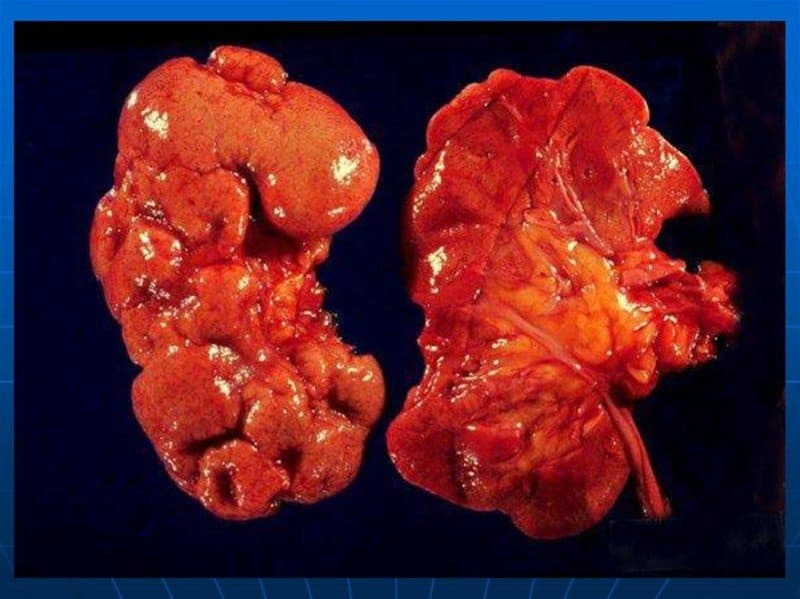
Stála únava a slabosť pri cukrovke takmer na 100 % ukazujú na vážne štádium oxidácie orgánov glukózou. A najviac trpia obličky — pre chýbajúce nervové zakončenia prebieha proces skryto, kým nevedie k odumretiu tkanív a k smrti.
— Len si to predstavte! Za pár týždňov môže ničenie tkanív postupovať tak rýchlo, že poškodenia sa stanú nezvratnými a akákoľvek liečba stratí zmysel! VTEDY UŽ OBLIČKY NEOBNOVÍTE! A už nebudete mať na výber — iba ZOMRIEŤ! Alebo v lepšom prípade — SKONČIŤ PRIPÚTANÍ K PRÍSTROJU UMELEJ OBLIČKY!
Ignorovanie týchto príznakov vedie ku komplikáciám cukrovky! A ak máte vysoký cukor, riskujete, že zostanete invalidom a zomriete!
— Ak ignorujete prvé príznaky ničenia orgánov glukózou — môže vás to stáť život. Len za rok sa viac než 85 000 diabetikov stalo pacientmi s diagnózou „akútne zlyhanie obličiek“, z ktorých 30 000 sa nedožilo tohto roka . Koľko času vám zostáva? Odpoveď závisí od toho, ako dlho ste ešte ochotní príznaky ignorovať.
A ak sa ničenie vnútorných orgánov a tkanív už začalo, žiadna samoliečba a už vôbec nie bežné lieky vám nepomôžu.
Tu je zoznam, ktorý som za sedemdesiat rokov odriekal každému človeku ešte na prahu:
- Stála únava a slabosť, aj keď je cukor v norme;
- Pocit rozlámanosti po ráne, ťažoba v tele;
- Opuchy po ráne, stopy od ponožiek, „vrecká“ pod očami;
- Náhle výkyvy tlaku, závraty bez príčiny;
- Sucho v ústach, smäd aj po napití;
- Časté močenie;
- Bolesti v krížoch, pocit tlaku v dolnej časti chrbta;
- Občasná nevoľnosť, nepríjemná chuť v ústach;
- Nočné kŕče, mravčenie v prstoch;
- Zmena farby moču, výskyt peny;
Všetky orgány a tkanivá sa ničia pôsobením glukózy. Venujte pozornosť príznakom, kým sa nezačali nezvratné komplikácie vysokej hladiny cukru v krvi. Toto čaká tých, ktorí nepočúvali signály svojho tela: ZLYHANIE OBLIČIEK, OCHRNUTIE, GANGRÉNA, NEKRÓZA, AMPUTÁCIA, STRATA ZRAKU, INFARKT, MŔTVICA A NÁHLA SMRŤ – nečakajte na okamih, keď už bude neskoro!
Pozrite sa na tieto fotografie. Toto sa stalo tým, ktorí si príznakov nevšímali. Naozaj si prajete takýto osud?
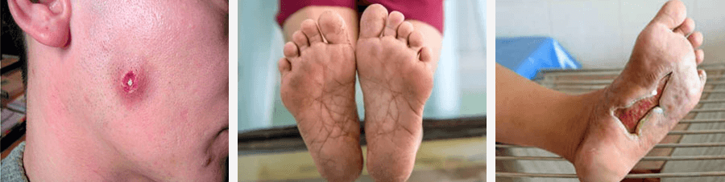
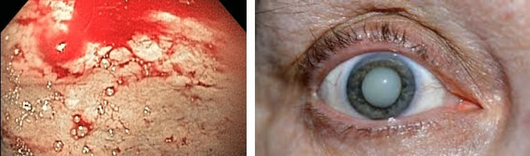
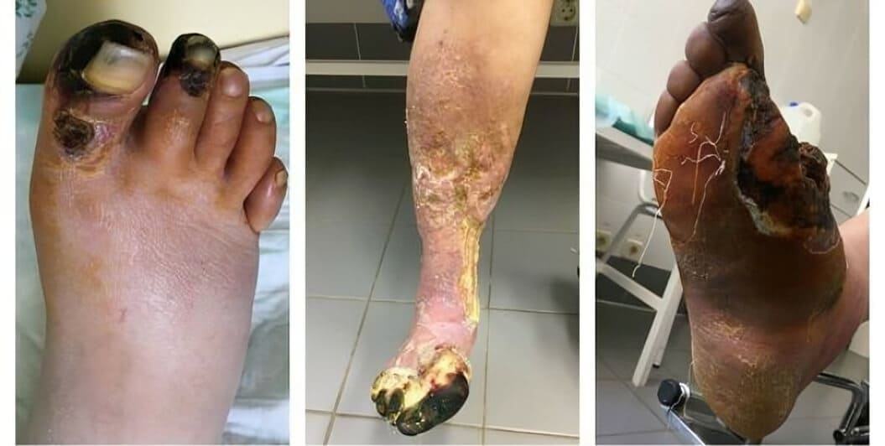
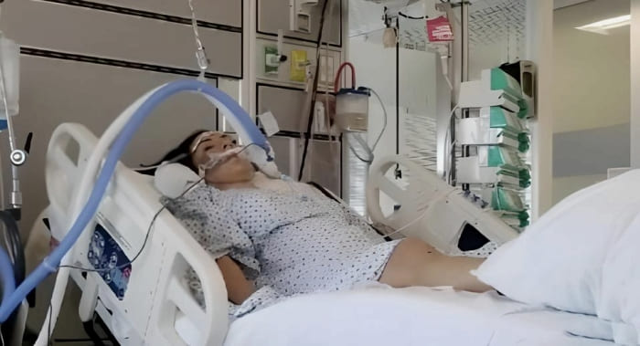
Stále výkyvy cukru rýchlo ničia tkanivá orgánov a cievneho systému. A každý mesiac desaťtisíce ľudí umierajú a stávajú sa invalidmi pre komplikácie cukrovky bez šance na uzdravenie. Oxidácia orgánov glukózou sama neodznie — konajte, kým nie je neskoro!
Michal Hriňák:
— Za sedemdesiat rokov mi cez ruky prešlo vyše 40 000 ľudí a poviem vám toto: každý z týchto ľudí si myslel, že sa ho to netýka! Ale tu je výsledok: početné oxidácie a poškodenia buniek glukózou A UTRPENIE A SMRŤ! Viac než 90 % zomiera len preto, že včas neurobili správne kroky. Oxidácia vnútorných orgánov glukózou vždy ZAČÍNA NENÁPADNE — a ignorovaním príznakov hádžete svoj život do koša!
Zamyslite sa! Ak máte čo i len mierne výkyvy cukru v krvi, máte MÁLO ČASU, aby ste sa zachránili pred nezvratnými následkami! Nutne potrebujete správnu starostlivosť! A to ani nehovorím o ľuďoch, ktorí majú cukrovku už 1–2 roky — glukóza rýchlo ničí orgány, cievy, zrak a nervový systém! A NEZVRATNÉ KOMPLIKÁCIE MÔŽU ZAČAŤ KEDYKOĽVEK! Jediná šanca, ako sa zachrániť – okamžite odstrániť glukózu z tkanív, spustiť regeneráciu a obnoviť receptory, kým ešte nie je neskoro!
Niektoré príklady uzdravenia touto metódou doslova ohromujú! Lekári sa chystali amputovať nohu Kristíne Kováčovej v 49 rokoch, ale ona sa dokázala komplikáciám vyhnúť a úplne sa zbavila výkyvov cukru metódou uja Michala. Tu je, čo napísala...
Po desiatkach návštev u lekárov si Kristína Kováčová vypočula smrteľný rozsudok: v roku 2021 jej diagnostikovali cukrovku 2. typu, ale nikto ju nevaroval, ako rýchlo jej zničí zdravie. Všetko sa začalo drobnými príznakmi, no za púhe 2 mesiace sa stav zhoršil a na nohe vznikla gangréna, lekári navrhli amputáciu.
Lekári povedali: „Obličky sú na pokraji zlyhania. A žiaľ, nohu bude nutné odrezať. Nedá sa nič robiť.“ Rodinu nemala, ale nevzdala sa a rozhodla sa bojovať do konca.
„Vždy som bola aktívna, pracovala som od rána do večera, ale všetko sa zmenilo za pár mesiacov... Najprv prišiel stály smäd, únava a slabosť, točila sa mi hlava a začala som častejšie chodiť na toaletu. Myslela som si, že som len preťažená. Ale jedného dňa som odpadla priamo na ulici! Prebrala som sa až v nemocnici. Lekári povedali, že mi prudko stúpol cukor, určili diagnózu cukrovka a že obličky už nezvládajú záťaž.
Nečakala som, že sa všetko zhorší tak rýchlo! Po mesiaci sa mi na nohách objavili vredy a ani som si nevšimla, ako mi začala černieť pravá noha! Strašne som sa zľakla!!! Lekári povedali: „Nohu bude treba amputovať!“ Inak sa infekcia rozšíri ďalej a jednoducho zomriem... Takmer som s amputáciou súhlasila, ale na poslednú chvíľu som sa dopočula o ujovi Michalovi z Kysúc, ktorý mi poslal svoj prostriedok, a začala som ho užívať.
Prešli štyri mesiace a stále tomu neverím! Obličky sa obnovili a cukrovku som zvládla! Cukor drží v norme, a čo je najdôležitejšie – zachránila som si nohu a nestala som sa invalidkou! Ujo Michal mi vrátil život a som mu vďačná z celého srdca!“
Kristína Kováčová, 49 rokovDruhý názorný prípad je Martin Blaško, ktorý má len 32 rokov a pri bežnej lekárskej prehliadke, ako to často býva, mu cukrovku zistili náhodou.
A napriek predpísanej liečbe sa jeho stav zhoršoval obrovskou rýchlosťou. Za 3 mesiace náhle schudol o 10 kg, začali strašné bolesti v krížoch, výrazne sa mu zhoršil zrak a doslova za mesiac – obličky takmer prestali fungovať!
Martin sa s veľkou nádejou rozhodol vyskúšať metódu Michala Hriňáka a už po 3 týždňoch lekári neverili vlastným očiam! CUKOR SA STABILIZOVAL, OBLIČKY SA OBNOVILI A HLAVNE – LEKÁRI ZRUŠILI DIALÝZU!
Podarilo sa nám s ním spojiť a tu je, čo nám povedal:
„Ďakujem, že ste sa opýtali. Možno to ešte niekomu pomôže… Cítil som sa zdravý a ani mi nenapadlo, že mám cukrovku. Ale pri plánovanom vyšetrení mi lekári diagnostikovali cukrovku 2. typu a začiatok problémov s obličkami!
Najprv bola slabosť a únava, ktoré sa pri cukrovke považovali za normálne, ale za 3 mesiace šlo všetko prudko dole! Budil som sa v noci s pálivou bolesťou v chrbte a nemohol som sa pohnúť! Lekári povedali: „Nie je na výber. Buď transplantácia obličky, alebo doživotný prístroj!“ Bál som sa, že zomriem…
Ale vďaka Bohu ma neopustila moja žena! Našla Michala Hriňáka na Kysuciach, poslala mu výsledky a on odpovedal: „Obličky sa ešte dajú zachrániť, ak sa zvládne cukrovka, ale musíme konať hneď!“
Po začatí liečby sa cukor vyrovnal už na druhý deň! Za týždeň bolesti zmizli, funkcia obličiek sa upravila! Celá kúra trvala 60 dní a ja som sa vrátil do života!!! Hlavné je, že som sa vyhol operácii a úplne som si obnovil zdravie tým, že som sa zbavil cukrovky a výkyvov cukru! Keby nebolo mojej ženy a uja Michala, neviem, ako by to všetko dopadlo... Som mu nesmierne vďačný za záchranu!
Každý, kto túto metódu vyskúšal na sebe – dokázal si vrátiť stratené zdravie a úplne sa zbaviť výkyvov cukru, pričom sa vyhol nenapraviteľným následkom a ničeniu orgánov. A takých ľudí sú tisíce!
Recept Michala Hriňáka, ktorý chráni orgány pred glukózou, úplne obnovuje receptory a upravuje hladinu cukru v krvi! Nemizne len cukrovka, zlepšuje sa aj celkové zdravie!
Michal Hriňák:
— Tento recept som nezložil za rok. Skladal som ho štyridsať rokov, kus po kuse, a štyridsať rokov som ho miešal sám, vo svojej izbe, pre každého človeka zvlášť. Nielen upravuje cukor — odstraňuje samotnú príčinu cukrovky, „opravuje“ receptory a vracia hormóny do normálu. Žiadne tabletky, injekcie ani diéty nedokážu poskytnúť podobný účinok!
Samotný recept nie je zložitý, ale presnosť je všetko – každý miligram má význam! Regeneračné procesy sa spustia len pri prísnom dodržaní všetkých pomerov, kde každá prírodná zložka plní svoju úlohu. Roztok pripravíte podľa návodu uvedeného nižšie.
Na domácu prípravu jednej dávky budete potrebovať:
- Čierna gymnéma listy: extrakt 4500 mg
- Koptis koreň: extrakt 3200 mg
- Enantia kôra enantie chloranty: extrakt 3800 mg
- Etiópska rasca semená: extrakt 4200 mg
- Gardénia plody: extrakt 1900 mg
- Kasia kôra: extrakt 2300 mg
- Trimida semená: extrakt 720 mg
Žiaľ, väčšinu týchto zložiek je v Európe veľmi ťažké zohnať. A mnohé z nich treba objednávať z iných častí sveta. Navyše je nevyhnutná správna kombinácia všetkých týchto látok: presnosť dávkovania musí byť na úrovni 0,1 mg.
Práve preto domáce alebo nelegálne pokusy o prípravu tohto receptu vo väčšine prípadov nemajú plný účinok alebo sú úplne neúčinné.
Ale je tu aj dobrá správa! Existuje jediný prípravok, ktorý obsahuje všetky tieto zložky a navyše ďalších 27 uznávaných a vzácnych extraktov pre ľudí s cukrovkou.

Jozef Hriňák:
— Zatiaľ sa nám podarilo vytvoriť iba jeden prípravok, aj tieto zložky je ťažké získavať vo veľkom množstve. Samotný prípravok sa volá – “Gluconix”. A zatiaľ je to jediný prostriedok, ktorý nielen upravuje cukor, ale rieši príčinu cukrovky a vracia receptory do pôvodného stavu, aktivuje regeneráciu poškodených tkanív a upravuje tvorbu inzulínu.
Obsahuje presné pomery každej zložky z otcovho receptu a navyše ďalších 27 najvzácnejších extraktov a vitamínový komplex zameraný na obnovu zdravia ľudí s cukrovkou. Je to jediná formula, ktorá dokáže prakticky úplne zvládnuť cukrovku, obnoviť hormonálnu rovnováhu a zbaviť nebezpečných komplikácií!

“Gluconix” — je to bez preháňania prelom. Vyrastal som medzi otcovými sušenými bylinami a jeho váhami a remeslo som sa učil od detstva. Lekár zo mňa nebol. Roky som otca prehováral, aby jeho recept nezostal zavretý v jednej izbe na Kysuciach. Potom som päť rokov obchádzal laboratóriá, kým som našiel ľudí, ktorí boli ochotní ten recept vziať vážne. Vývoja sa nakoniec zúčastnili vedci zo Slovenska, Nemecka a USA a výsledok predčil všetky očakávania. Tajomstvo je v jedinečnej technológii extrakcie zložiek — „Hypermolekulárna extrakcia“, vyvinutej v roku 2021. Umožňuje získavať účinné látky s presnosťou na 0,01 nm, čo zvyšuje účinnosť každej látky 3,5 až 5,5-násobne.
„Gluconix“ nemá obdobu. Formula je zložená z najvzácnejších zložiek sveta, z ktorých každá v presnej dávke nielen upravuje hladinu cukru, ale aj plne obnovuje pôvodnú citlivosť receptorov.
Je to jediný prostriedok, ktorý dokáže prakticky úplne zvládnuť cukrovku, zbaviť tkanivá ničivého vplyvu glukózy a obnoviť poškodené tkanivá aj v tých najťažších prípadoch.
A mne je dokonca ťažké ho s niečím porovnať, táto formula doslova nemá obdobu. Hlavný rozdiel “Gluconix” — je práve obnovenie prirodzenej schopnosti organizmu spracovať glukózu. Účinné látky jemne pripomenú vašim bunkám ich prirodzenú funkciu, vďaka čomu výkyvy cukru miznú. Zároveň sa spúšťa aktívna regenerácia tkanív poškodených oxidáciou.
Vďaka koncentrácii sa nám podarilo zlepšiť prestup látok do tkanív takmer o 400 % — zložky tak účinne rozkladajú glukózu v orgánoch a obnovujú tkanivá. Prípravok cukor nielen znižuje — „opravuje“ receptory a privádza tvorbu inzulínu k norme, zbavuje rizika komplikácií a výrazne zlepšuje zdravie ako celok. A to nie je preháňanie!
„Gluconix“ zbavuje výkyvov cukru, obnovuje receptory a chráni tkanivá pred glukózou vďaka týmto 4 účinkom!
Jozef Hriňák:
— Pri vytváraní “Gluconix” sme určili kľúčové etapy obnovy spracovania glukózy, aby pôsobenie prebiehalo postupne a účinne. Tieto mechanizmy spúšťajú obnovu buniek, vracajú citlivosť na inzulín a odovzdávajú reguláciu hladiny cukru späť samotnému organizmu, čo umožňuje dosiahnuť 98,7 % obnovy aj v tých najpokročilejších prípadoch.
4 hlavné účinky prostriedku „Gluconix“ pri jeho užívaní:
- Úprava cukru v krvi: Začína od prvého užitia. Už počas niekoľkých minút účinné látky upravujú hladinu cukru na úplnú normu krátkodobou stimuláciou receptorov a znižujú glukózovú záťaž na minimum. Výkyvy cukru miznú a takmer okamžite cítite zlepšenie.
- Obnova receptorov a citlivosti buniek: Počas 7–14 dní užívania „Gluconix“ obnovuje inzulínové receptory a odstraňuje hlavnú príčinu cukrovky. Bunky opäť spracúvajú glukózu a organizmus si sám udržiava jej správnu hladinu. Upravuje sa tvorba inzulínu a už netreba neustále merať hladinu cukru v krvi.
- Rozklad nahromadenej glukózy v orgánoch: Za 3–5 týždňov sa vaše bunky a orgány úplne vyčistia od cukrových usadenín. Úplne mizne riziko oxidácie obličiek, pečene, ciev, srdca a ďalších orgánov glukózou. Miznú zápaly a vďaka tomu pocítite výrazné zlepšenie zdravia, nárast energie, síl a životného tonusu.
- Regenerácia buniek poškodených glukózou: Po 4–6 užitiach „Gluconix“ spúšťa bunkovú regeneráciu tkanív a obnovuje až 97 % všetkých poškodení spôsobených glukózou. Vďaka podporným extraktom a stimulácii hormónov prebieha regenerácia tkanív 3–5-krát rýchlejšie a telo sa rýchlo vracia do zdravého stavu.
Každý z týchto účinkov je výsledkom dlhoročnej práce a najnovších metód extrakcie, ktoré umožnili spojiť všetky kľúčové zložky. Toto nie je dočasné zlepšenie, ale reálna šanca zbaviť sa problému a ochrániť organizmus na roky dopredu! Zároveň je prostriedok aj najlepším spôsobom prevencie zo všetkých, ktoré dnes existujú.
Nezávislé vedecké skupiny zo Slovenska, Nemecka a USA počas 2 rokov testovali „Gluconix“ na 4230 skutočných ľuďoch, ktorí mali problémy s hladinou cukru v krvi, a získali výsledky, ktoré ohromujú!
Jozef Hriňák:
— Zverejnenie našich laboratórnych výsledkov v odborných časopisoch spôsobilo skutočný prelom — popredné krajiny sa okamžite začali zaujímať o “Gluconix” a požiadali o jeho testovanie na svojich pacientoch. Už vtedy bolo jasné: formula má obrovský potenciál, ktorý sa predtým považoval za nemožný. Táto metóda nielen znižuje cukor na dlhý čas, ale práve „reštartuje“ inzulínové receptory a účinne chráni pred komplikáciami a ničením tkanív glukózou.
Výskumy na skutočných ľuďoch, uskutočnené v najlepších vedeckých centrách Slovenska, Nemecka a Izraela, skončili triumfálne. Žiadne doterajšie metódy sa nemôžu porovnávať s “Gluconix”. Tento prípravok ukázal výsledky, ktoré medicína už dlho nečakala: obnovu podžalúdkovej žľazy a receptorov do plnej normy a spustenie regenerácie buniek poškodených glukózou vrátane nervových zakončení. Lekári sú v šoku z toho, ako rýchlo sa ich pacienti vracajú do normálneho života!
Výsledok výskumu „Gluconix“ na 4230 ľuďoch s vysokou hladinou cukru a príznakmi cukrovky
| Stabilizácia cukru v krvi | 100% |
| Úplné zbavenie sa výkyvov cukru | 99,7% |
| Obnova citlivosti receptorov | 99,1% |
| Návrat tvorby inzulínu do normy | 99,1% |
| Zastavenie oxidačných procesov v orgánoch | 98,4% |
| Predídenie zlyhaniu obličiek | 94,3% |
| Úplná obnova funkcie obličiek | 97,3% |
| Odstránenie glukózy z orgánov | 98,0% |
| Zlepšenie krvného obehu a stavu ciev | 84,4% |
| Výrazné zlepšenie metabolizmu | 96,9% |
| Zlepšenie zraku a odstránenie retinopatie | 79,0% |
Presné termíny pri užívaní „Gluconix“ nájdete na tomto odkaze.
V súčasnosti sa mnohé svetové centrá pokúšajú zopakovať formulu “Gluconix”. Ale zatiaľ ide len o laboratórne pokusy a v praxi naše výsledky prekonávajú tie ich minimálne 10–15-násobne. Takúto účinnosť jednoducho nie je fyzicky možné dosiahnuť štandardnými metódami.
Ako dlho trvá takáto kúra? A ako dlho trvá úplná obnova inzulínových receptorov a odstránenie výkyvov cukru?
Michal Hriňák:
— Minimálna kúra trvá 30 dní, no v ťažších prípadoch môžu byť potrebné až 2–3 kúry za sebou. Ale úplne vo všetkých prípadoch bez výnimky sme videli plný návrat citlivosti buniek a uzdravenie, bez ohľadu na vek a závažnosť. Je to jedinečná šanca NATRVALO sa zbaviť problému vysokého cukru a predísť smrteľným komplikáciám!
Zároveň “Gluconix” nielen obnovuje samoreguláciu cukru v krvi a upravuje jeho hladinu od PRVÝCH MINÚT, ale je aj najlepším spôsobom prevencie cukrovky a silnou podporou pre organizmus každého človeka, nieto ešte pre diabetikov. Doslova OMLADZUJE ORGANIZMUS a POSILŇUJE ZDRAVIE na roky dopredu.
K dnešnému dňu sa vďaka „Gluconix“ už viac než 9 000 ľudí na Slovensku zbavilo výkyvov cukru v krvi. Mnohí z nich zvládli cukrovku úplne a predišli vážnym komplikáciám a smrti.
Michal Hriňák:
— “Gluconix” spúšťa regeneráciu buniek a vracia tvorbu hormónov do normálu, aj keď choroba už dosiahla kritické štádium. Bez tabletiek, bez injekcií, bez nutnosti neustále merať cukor — všetci dosiahli stabilné zlepšenie a vrátili sa k plnohodnotnému životu. TENTO PROSTRIEDOK ÚPLNE ZMENIL PRÍSTUP K CUKROVKE!
Nedostatok a čakacie lehoty na Gluconix 4–6 mesiacov! Prečo nie je Gluconix v lekárňach? Počuli sme, že je veľmi ťažké ho získať, je to pravda?
Bohužiaľ áno. Ako som už povedal, výroba “Gluconix” — je nesmierne zložitý a nákladný proces. Fyzicky jednoducho nedokážeme pokryť všetkých, ktorí ho potrebujú. Dnes je prostriedok dostupný len pre obmedzený okruh, a to je len malá časť tých, ktorí naliehavo potrebujú pomoc.
Myslím, že bude treba ešte asi 3 roky, kým bude “Gluconix” dostupný masovo. Zatiaľ sa pre obmedzenú výrobu prípravok distribuuje len v rámci zvýhodnených programov, ktoré prebiehajú cez internet 2-krát ročne. Áno, financovanie je obmedzené, ale rokovania prebiehajú a nemienime sa zastaviť.
Aby bolo možné podať žiadosť o účasť priamo tu — žiadam o pridanie online formulára na objednávku priamo z našej výrobne.
Posledná šanca získať Gluconix ešte tento rok — využite ju, kým vás nepredbehnú iní!

Jozef Hriňák:
— Tento rok sa nám podarilo zabezpečiť financovanie a vyčleniť 20 000 balení výhradne pre vašich čitateľov, ale to pokryje len malú časť tých, ktorí ho potrebujú. Ak túto šancu premeškáte teraz — ďalší zvýhodnený program sa začne až na konci roka !Podľa podmienok programu môže každý obyvateľ Slovenska starší ako 40 rokov získať zľavu až 50 %,, ale program končí . A druhá šanca v dohľadnom čase nebude.
Cukrovka a jej komplikácie prichádzajú vždy náhle. Nečakajte, kým bude neskoro! Dopyt po „Gluconix“ rastie každým dňom! Kým platí zvýhodnený program, nepremeškajte šancu zachrániť sa pred výkyvmi cukru a oxidáciou glukózou na dlhé roky. Prostriedok má kumulatívny efekt a stačí ho užiť raz za 3–4 roky.
Ak sa chcete zapojiť do programu — jednoducho uveďte svoje meno a telefón do formulára nižšie. Ozve sa vám konzultant, dohodne kúru a zabezpečí doručenie do ktoréhokoľvek kúta Slovenska do 2–3 dní poštou alebo kuriérom priamo k vašim dverám.
Prajem všetkým pevné zdravie! Dávajte na seba pozor! S úctou, Michal Hriňák a jeho syn Jozef.
Aktualizované : V súvislosti s vysokým dopytom po Gluconix sa môže vyčlenená zásoba minúť skôr, než sa plánovalo! Pripomíname, že – je posledný deň platnosti programu alebo do vypredania zásob určených pre túto akciu.

Pozor! Nezatvárajte ani neobnovujte stránku, inak bude vaša rezervácia Gluconix pridelená niekomu inému!
Akcie sa môžete zúčastniť — máte rezervované miesto: №priamo k vám domov

KOMENTÁRE:
Terézia Hudáková
Veľmi pekne ďakujem za informácie! Dlho som sa trápila s cukrovkou, skoro každý deň závraty a slabosť. O tomto prostriedku som už počula od známych veľa dobrého, aj to, že neobsahuje žiadnu chémiu. Som veľmi rada, že som mohla objednať s takou veľkou zľavou. Ďakujem!
Renáta Kráľová
Podarilo sa mi objednať s 50 % zľavou a už minulý pondelok mi prišiel balíček s Gluconix. Zatiaľ je asi skoro hovoriť, ale už cítim, že je lepšie, cukor výrazne klesol! Už sa mi netočí hlava. Predtým som odpadávala a bála som sa vyjsť von. Ďakujem, že dávate ľuďom nádej!
Pavol Zeman
Ujo Michal má pravdu – lepšie je pomáhať si bylinkami než si ničiť telo chémiou alebo hormónmi. A je hlúpe si myslieť, že chemické látky a injekcie cukrovku vyliečia. Iba ju potláčajú, nič viac.
Milada Rybárová
Mám 41 rokov a cukrovku už 2 roky. Skoro stále som brala metformín, až sa mi pred mesiacom stav prudko zhoršil... Cukor začal stúpať na 16 mmol, slabosť bola neznesiteľná, na koži sa všade objavili žilky. Začala som brať Gluconix a na piaty deň cukor takmer prestal kolísať. Nakoniec sa za 1,5 mesiaca cukor úplne vyrovnal a drží sa na 6–8 mmol! Aj pleť je lepšia. Cukor už týždeň vôbec nemeriam.
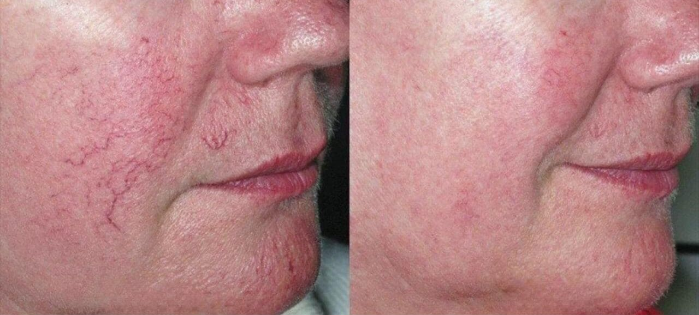
Stanislav Urban
Tento prostriedok ma zachránil pred kómou a problémami s cievami! Predtým sa mi neustále triasli ruky, dvíhal sa mi žalúdok, tmelo sa mi pred očami – bola to hrôza. Ale Gluconix naozaj zachránil, bez preháňania. Kúru som ešte nedokončil, beriem ho len 38 dní, ale cukor drží stabilne na 6,0–6,3 mmol aj bez liekov. Nečakal som, že sa cukrovka dá zvládnuť!
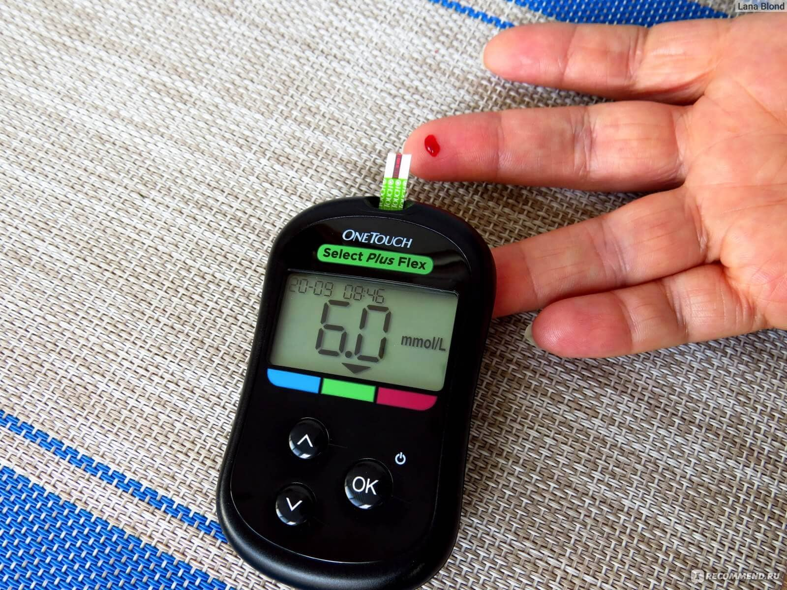
Helena Zimová
Váham, či mám tiež vyskúšať Gluconix. Ako sa uistiť, že to nie je ďalší prázdny sľub? Naozaj to tak dobre pomáha? Lekári mi hovoria, že sa už bez dialýzy nezaobídem a obličky sú na hrane :(
Monika Ondrušová
Helena, aj ja som bola skeptická, kým som to nevyskúšala. Brala som Gluconix 1 mesiac a účinky cítim celým telom. Akoby sa telo reštartovalo, mám viac sily, energie, lepšie spím. Bez preháňania!
Predtým mi opúchali nohy, bola slabosť, závraty, boleli ma obličky. Teraz je všetko stabilné, žiadne problémy a výsledky sú v norme. Myslím, že by ste to mali skúsiť aj vy.
Bohuš Mihálik
Helena, objednajte, nebojte sa! Aj mne začali zlyhávať obličky, kreatinín stúpal, lekár povedal, že je to pre cukor, ponúkali mi, nech sa pripravím na dialýzu! Ale vďaka bohu som včas našiel Gluconix. Po 2,5 mesiaca som na problémy s cukrom aj obličkami úplne zabudol.
Anna Sivčáková
Cukrovku mi zistili náhodou pred 1,5 rokom. Najprv nič vážne, ale potom mi prudko klesol zrak a mala som pocit, akoby som mala v očiach piesok! Cukor vyskočil na 18. Mala som veľký strach! Vďaka bohu mi dobrí ľudia odporučili Gluconix a doslova za 2 týždne sa cukor úplne vyrovnal a zrak sa vrátil! Som veľmi šťastná. Dokončím celú kúru, 2 mesiace.
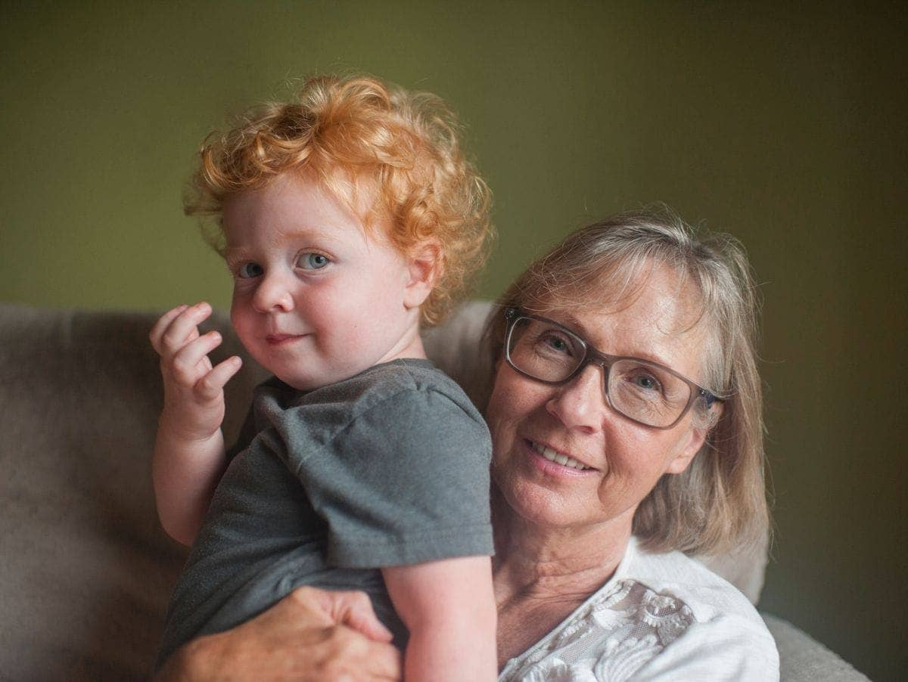
Šimon Rehák
Mám 47, cukrovku mi diagnostikovali pred 3 rokmi. Najprv som si hovoril – nič vážne, len únava. Ale tá bola čoraz silnejšia. Potom prišli kŕče v nohách, necitlivosť. Pred Gluconix som vyskúšal desiatky liekov – ale tie pomáhajú len dovtedy, kým ich berieš. A tento prostriedok má úžasný účinok! Za 1,5 mesiaca všetko zmizlo. Lekár, keď ma uvidel, bol v šoku, povedal, že takéto zlepšenie je veľmi vzácne. Vypytoval sa, čím som sa liečil.
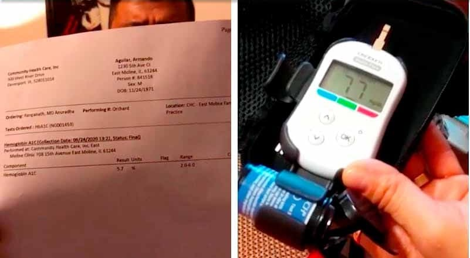
Ľudmila Fojtíková
Lepšie je nenechať to zájsť tak ďaleko! Mám cukrovku 2. typu, cukor šialene kolísal, brneli mi prsty, v noci kŕče! Z metformínu som mala zakaždým opuchy a ťažobu v nohách, a zakaždým horšie a horšie. Vtedy mi známy lekár odporučil Gluconix. A pomohol hneď – na tretí deň som cítila ľahkosť v nohách, opuchy zmizli. Cukor sa vyrovnal asi na deviaty deň. Kúru som ešte nedokončila, ale už som veľmi spokojná!
Oľga Tichá
Ďakujem za Gluconix. Beriem ho len 2 týždne a dnes mám cukor už 9,5 mmol, pritom predtým neklesol vôbec pod 17 mmol! Únava je preč a spánok sa zlepšil, prestali nekonečné návštevy toalety! Dlho som hľadala niečo spoľahlivé na cukor v krvi a teší ma, že je to prírodné.
Ilona Beňová
Cukrovku mám už dlho, ale pred dvoma rokmi sa začalo peklo – na nohách sa objavili vredy, koža praskala, všetko svrbelo. Myslela som, že je koniec. Posledný rok sa rany vôbec nehojili, každý krok bol utrpenie. Do Gluconix som veľké nádeje nevkladala, lebo som už skúsila všetko. Ale naozaj pomohol takmer hneď. Cítim sa mladá, akoby mi zas bolo 20! A pritom mám 43!
Andrea Rezáková
Súcítim so všetkými, ktorí majú tieto problémy. Mala som šťastie, že som sa o Gluconix dozvedela už pred pol rokom. Cukrovku som zvládla za 2 mesiace a môj lekár bol v šoku!!
Karolína Bartošová
Objednali sme Gluconix pre dcéru. Všetko sa začalo obyčajnou slabosťou a nevoľnosťou, a potom raz odpadla. Lekári povedali, že ide o prediabetes. Potom jej začali opúchať nohy, prsty stŕpli, mala kŕče. Ponúkali nám inzulín, ale nesúhlasili sme. Začali sme ju voziť k najlepším lekárom na Slovensku, najlepšie diéty, drahé lieky, ale nič nepomohlo tak ako Gluconix! A za 2,5 mesiaca sa to upravilo. Úžasné!
Tomáš Dolinský
Manželka je už dlho pripútaná na lôžko, každý deň hovorí, že sa bojí, že už nikoho nezaujíma… Myslí si, že ju chcem opustiť. Ale ja ju milujem viac než život! A mali sme obrovské šťastie, že sme stihli objednať Gluconix! so zľavou 50 %! Nečakali sme, že pomôže tak dobre. Berie ho len 4 týždne, ale dnes sama šla robiť na záhradu, teší sa ako kedysi! Veľmi ďakujeme, že ľuďom otvárate oči!
Daniela Hrubá
Mne lekári povedali, že sa už nedá nič robiť a že cukrovka sa nelieči! Na Gluconix som nechala žiadosť, ďakujem.
Zuzana Jelínková
Objednala som, včera dorazil. Len čo som ho vyskúšala – hneď som cítila, že je ľahšie vstať. Zvyčajne ráno, kým si nezmeriaš cukor a nenaješ sa, sú nohy ako z vaty, ale takto je to akosi svižnejšie. Zatiaľ ho užívam len 3 týždne, ale cukor je už stabilne 6,5 až maximálne 7,5 mmol.
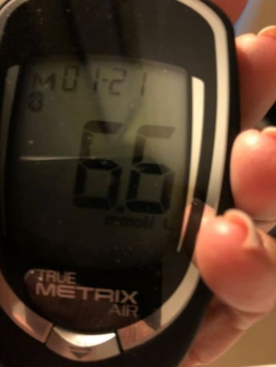
Božena Kubíková
Uja Michala poznám. Pred rokmi k nemu chodila celá naša dedina, aj moja mama. Presne o tejto metóde vtedy hovoril.
Iveta Novotná
Moja sestra strašne trpela cukrovkou! Nohy jej tak opúchali, že si nemohla obuť topánky, bola hneď unavená, často sa jej točila hlava. Po jedle vždy chcela spať, cukor šialený! O Gluconix sme sa dozvedeli náhodou od susedky a hneď objednali. A neverím vlastným očiam – ale sestra už po týždni bola živšia, opuchy na nohách zmizli a dnes prvýkrát za 2 roky normálne šla na prechádzku!
Gluconix mi vrátil sestru a je to prvý prostriedok, ktorý naozaj pomohol!!!! Veľmi vám ďakujem, napísala som tento komentár pre tých, ktorí váhajú – objednať alebo nie!
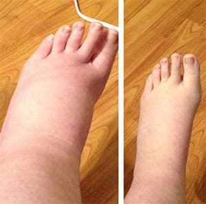
Vladimír Mašek
Iveta, po prečítaní vášho komentára som sa rozhodol objednať. Môžete mi prosím napísať na vladomasek[email protected], chcem sa vás opýtať, ako ste prostriedok užívali. Ďakujem.
Lenka Kolláriková
Daj Boh zdravie tvorcom tohto prostriedku! Cukrovku som zvládla za 2 mesiace, spočiatku som neverila, ale skúsila som to kvôli zľave. Predtým nič nepomáhalo. Odporúčam Gluconix všetkým, ktorí majú problémy s cukrom, aj ako prevenciu.
Veronika Kubová
Je tu niekto alergický? Mne opúchajú ruky a nohy takmer po všetkých liekoch. Zaujímalo by ma, či budem mať alergiu aj na Gluconix?
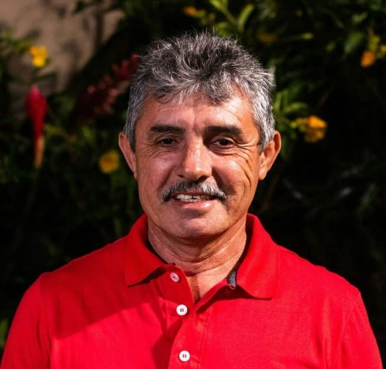
Ondrej Nečas
Som alergik, beriem ho už dva mesiace a žiadne reakcie! Prostriedok je hypoalergénny, overené! A hlavne – cukor je v úplnej norme aj po sladkom a už nemám strach o zdravie.
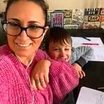
Barbora Dvorská
Som prekvapená, že takýto prostriedok existuje! A som veľmi spokojná s 50 % zľavou. Poslali mi Gluconix a kuriér ho doručil za 2 dni. Ďakujem za takúto možnosť!
Marcela Čechová
Predtým som sa bála vyjsť von – bála som sa, že odpadnem pre hypoglykémiu. Myslela som, že zostanem uväznená doma. Dcéra mi objednala Gluconix pred 3 mesiacmi, kúru som absolvovala. Teraz už nemám ten pocit „rozbitosti“ po jedle, konečne môžem pokojne chodiť von a robiť si svoje! Všetkým odporúčam vyskúšať.
Jaroslava Štefanková
Objednala som pre otca. Pre cukrovku mal problémy s pamäťou, zabúdal mená, mohol odísť z domu a nepamätal si, kam šiel. Asi pre poškodené cievy v mozgu. Pred Gluconix bol ako na ihlách, teraz je pokojný a cukor v norme – pomohlo mu to! Druhý týždeň sa začal usmievať a znovu sa teší zo života.
Adela Slamková
Jaroslava, gratulujem! Dobre, že ste to zvládli! Cukor je nebezpečná vec, prevencia je lepšia než potom takto trpieť. Objednám podľa vášho odporúčania, môj otec má podobný problém. Ďakujem.
Eva Šimková
Prečo o tomto nehovoria v lekárňach? Všetci diabetici používajú metformín alebo inzulín, aby si upravili cukor! Keď z nich sú len ďalšie problémy, čo potom?
Dušan Hrdlička
No pretože je im to jedno. Lekárne chcú len naše peniaze, aby sme stále trpeli a dokola kupovali ich lieky, ktoré pomáhajú len dočasne! To ste si ešte nevšimli?
Dagmar Brošová
Komentáre ma veľmi dojali a tiež som sa rozhodla objednať Gluconix pre svoju mamu. Je ťažké vidieť, ako trpí... Zatiaľ som vzala 4 balenia na skúšku. Dúfam, že pomôže. Ale keď toľko ľudí hovorí, že funguje, tak to asi bude pravda.
Hana Mikulová
Nikdy som si nemyslela, že dostanem takúto 50 % zľavu. Povedali, že doručenie do Bešeňovej bude za 2 dni. Celkom rýchle.
Alojz Konečný
Ďakujem! Snažil som sa ho nájsť v lekárňach, ale povedali mi, že býva veľmi zriedka a že je lepšie objednať cez formulár na tejto stránke.